Intro to OpenStreetMap
Keith Jenkins
Why OSM?
Open data
Many tools for using and analyzing OSM data
Most complete street map of the world
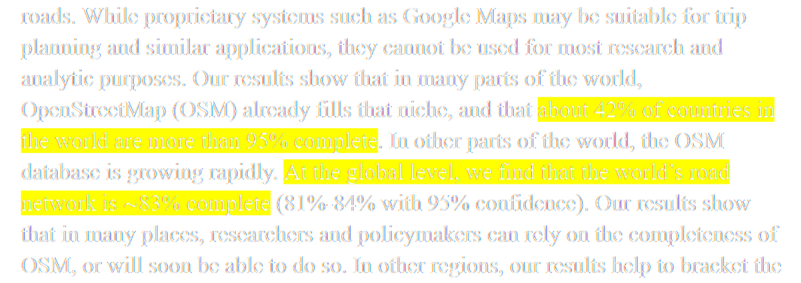
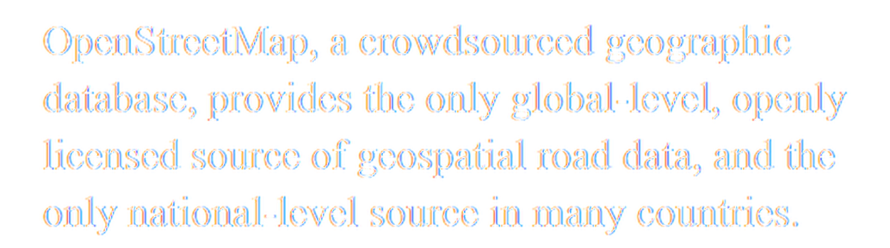
Also, OpenStreetMap is more than just streets...
buildings, waterways, railroads, trails, placenames, schools, banks, churches, mosques, temples, libraries, museums, hospitals, fire stations, forests, cemeteries, gardens, shops, offices, swimming pools, playgrounds, tennis courts, sports fields, and much more
OSM License and Copyright
The Elements of OSM
nodes, ways, tags, relations
Nodes (points)
Ways (lines, polygons)
Tags (attributes)
building=yes
building=house
building=commercial
highway=primary
highway=residential
highway=footway
TagInfo provides tag usage statistics
Relations
Acquiring OSM data
QGIS Plugins QuickMapServices QuickOSM OSMDownloader
QuickMapServices plugin
OpenStreetMap Standard
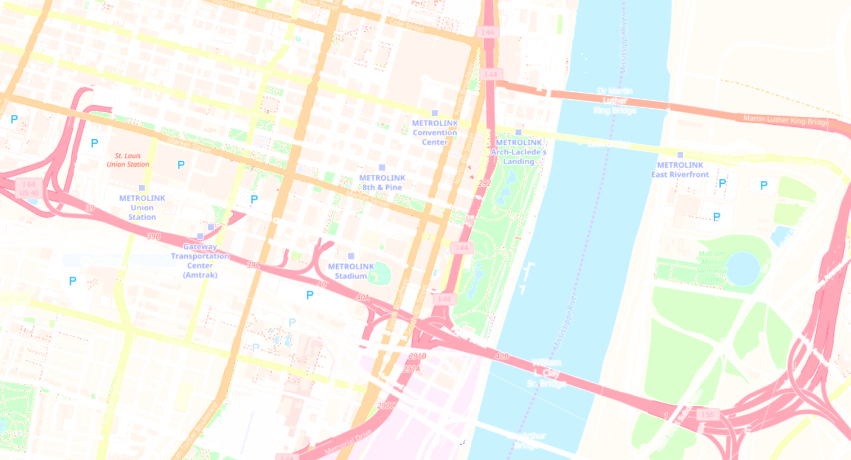
Mapbox Gray
Stamen Toner
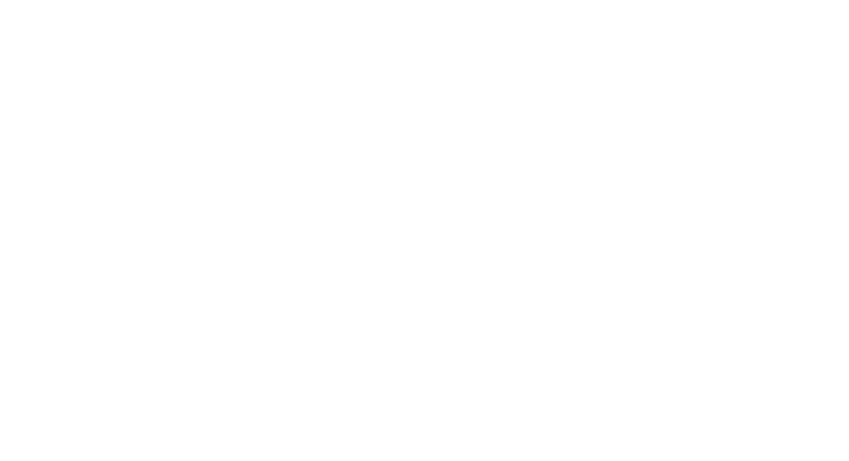
Stamen Watercolor
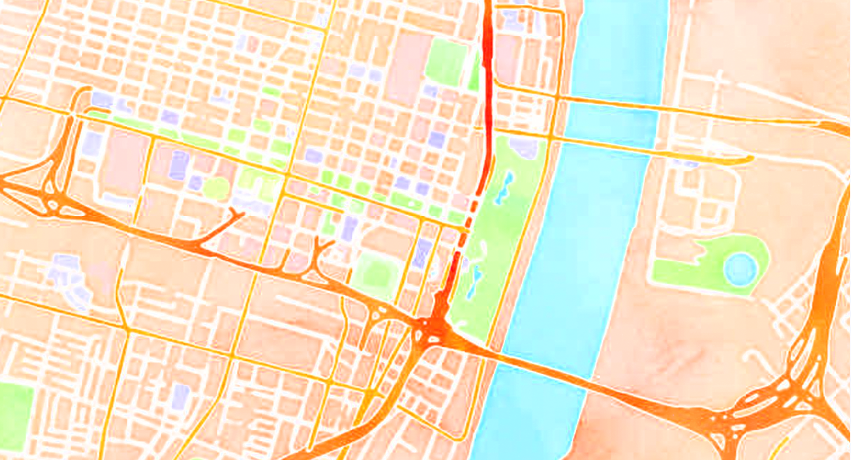
QuickOSM plugin
Download specific tags within an area
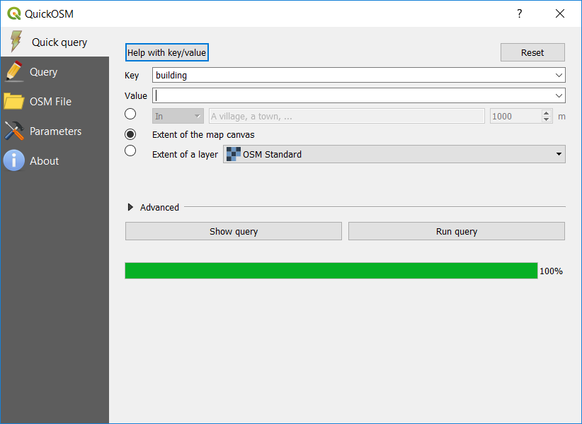
OSMDownloader plugin
Download everything within an area
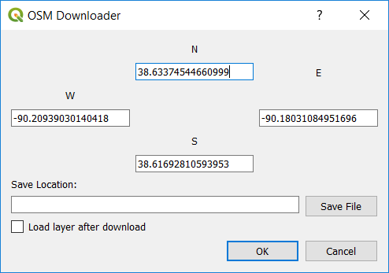
Websites offering OSM extracts
downloads by country/state, updated daily
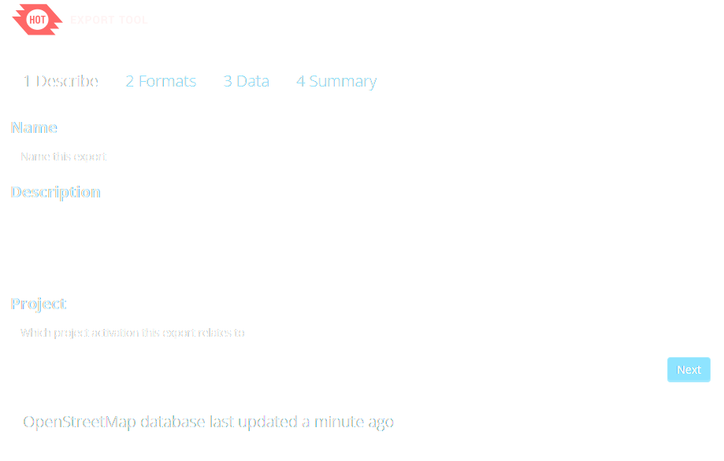
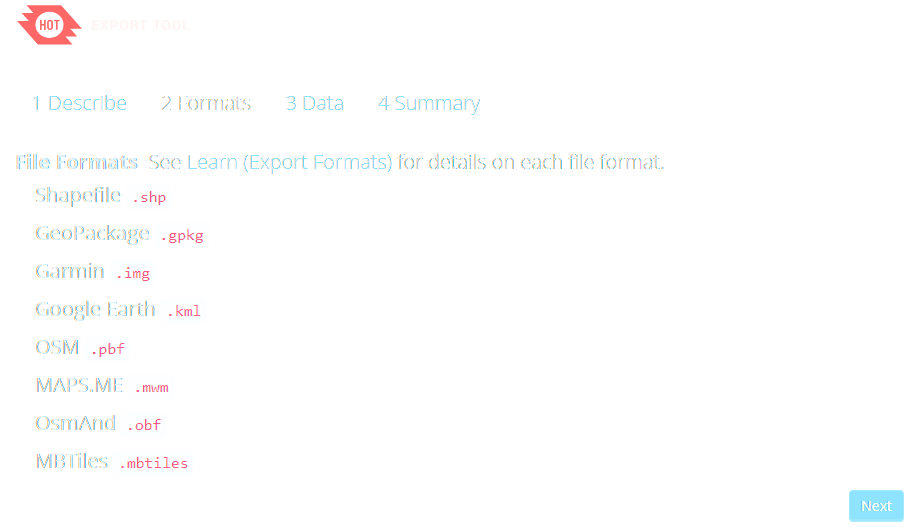
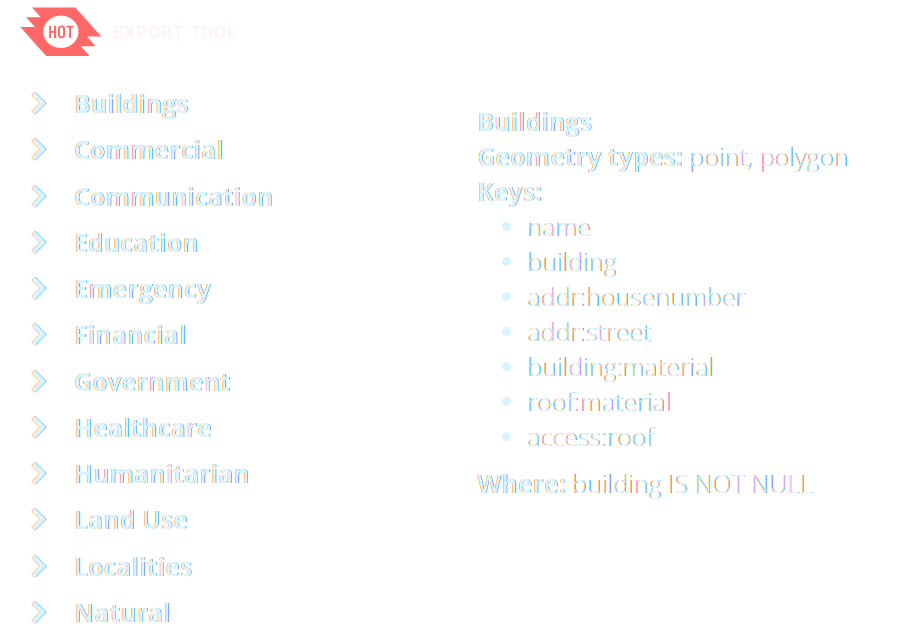
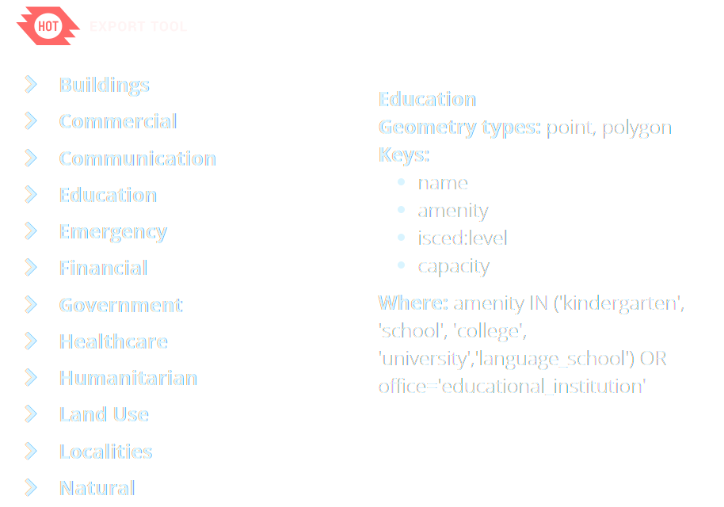
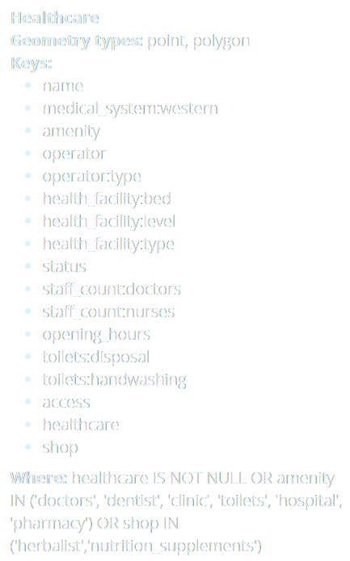
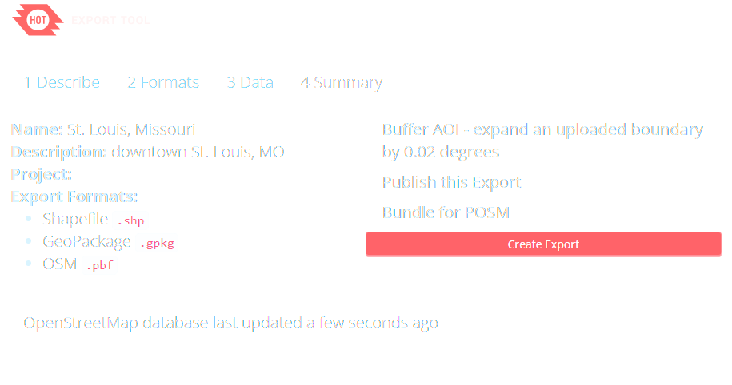
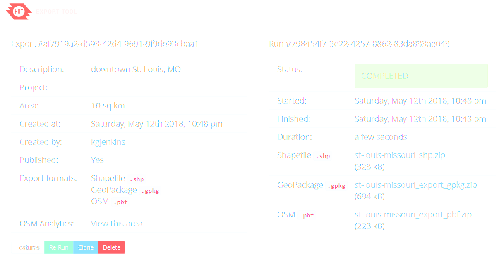
HOT Exports are split into point, line, polygon layers
Best to select just one "theme" at a time
OpenStreetMap ecosystem